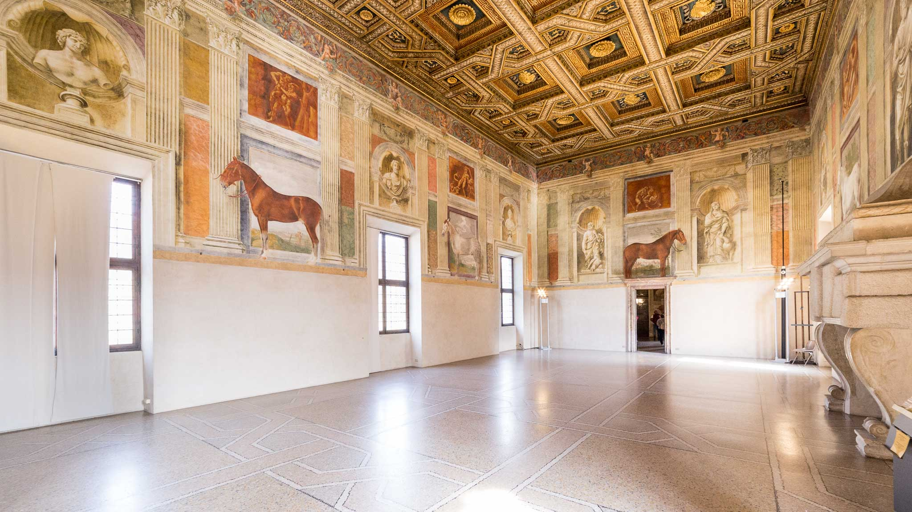

Il Palazzo Te, situato a Mantova, è un capolavoro dell'architettura rinascimentale progettato da Giulio Romano per Federico II Gonzaga. La sua costruzione iniziò nel 1524 e fu completata nel 1534. Il palazzo fu concepito come una villa di piacere, un luogo destinato al riposo e al divertimento del duca, lontano dalle formalità della corte.
Il nome "Te" deriva probabilmente dall'isola su cui fu edificato, che già nel Medioevo era conosciuta con questo nome. Federico II Gonzaga commissionò a Giulio Romano, allievo di Raffaello e celebre architetto e pittore, la progettazione del palazzo.
Giulio Romano combinò elementi classici e manieristi, creando un edificio unico per la sua epoca.
È il cuore del palazzo, progettato come uno spazio aperto e simmetrico che riflette l'armonia e l'equilibrio tipici dell'architettura rinascimentale.
Il cortile è circondato da portici con colonne doriche e decorato con stucchi e affreschi. È un esempio eccellente dell'abilità di Giulio Romano nel combinare elementi classici con innovazioni manieriste.
Questa sala prende il nome dai grandi affreschi che raffigurano i cavalli preferiti di Federico II Gonzaga. Gli affreschi, eseguiti da Giulio Romano e la sua bottega, sono realistici e dettagliati, celebrando la passione del duca per questi animali. La sala è un esempio del legame tra potere, simbolismo e arte che caratterizzava la corte dei Gonzaga.
Decorata con affreschi che raccontano la mitica storia d'amore tra Amore (Cupido) e Psiche, tratti dalle "Metamorfosi" di Apuleio. Gli affreschi, vivaci e pieni di dettagli, mostrano scene di feste, banchetti e momenti intimi.
La sala è un tributo alla bellezza, alla passione e al mito, rappresentando i valori culturali e artistici del Rinascimento.
Forse la più celebre del Palazzo Te, questa sala è interamente affrescata per creare un effetto immersivo e drammatico.
Gli affreschi raffigurano il mito della caduta dei giganti, puniti da Zeus per aver tentato di scalare l'Olimpo. Le figure dei giganti, enormi e scomposte, sembrano crollare dalle pareti e dal soffitto, coinvolgendo lo spettatore in una scena dinamica e teatrale.
Questo spazio rappresenta l'apice dell'abilità di Giulio Romano nel creare illusioni prospettiche e drammatiche.